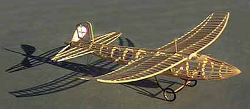
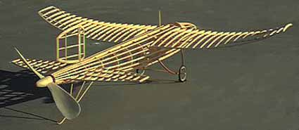
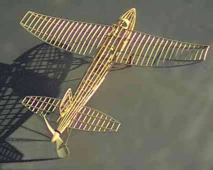

Another few hours of carving a prop, fitting spar pockets and rigging the bracing wire had my Aero Torpille ready for display at the November San Francisco Vultures meeting, its first public outing. A couple days later, it drew a few comments at the Moffett indoor session.


The finished bones weigh 18.1 grams with a pair of spoked wheels. I am not sure when I will cover it, as it is so pretty as it sits, but when finished it will be the same all white as the prototype.

Copyright 1998, Thayer Syme. All rights reserved